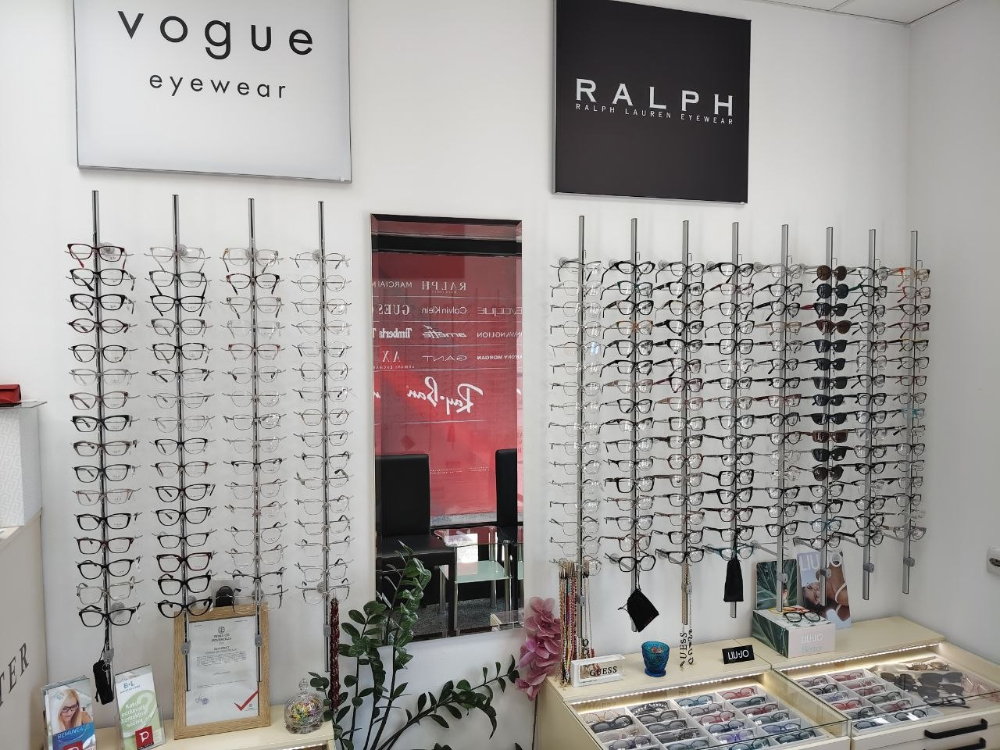
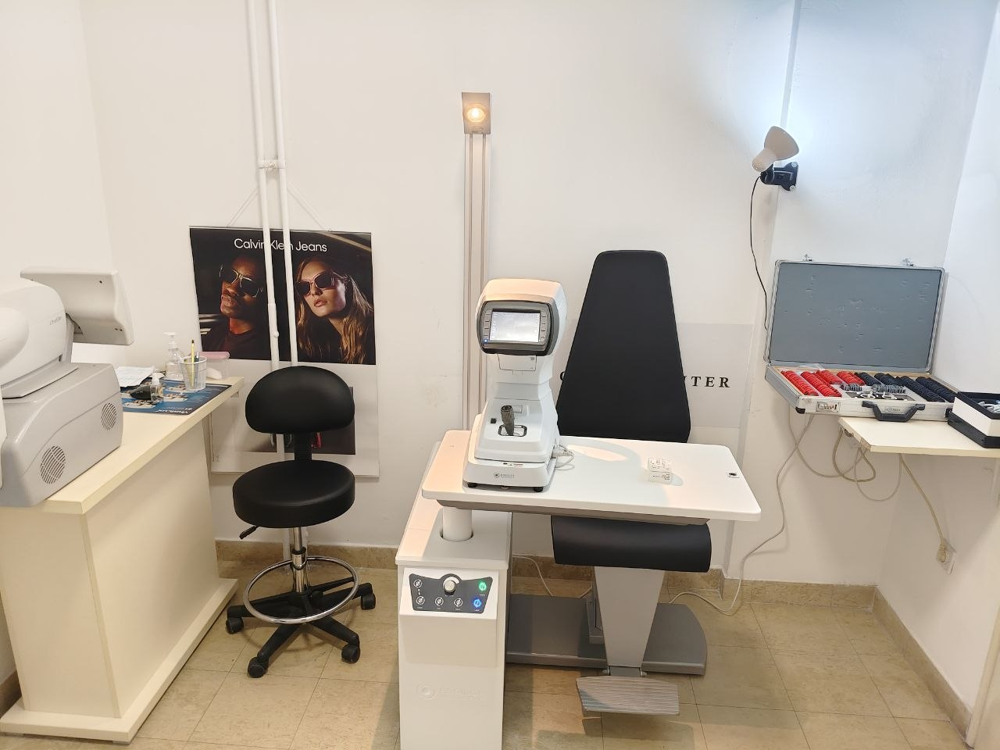

Нови-Сад · Оптика Ginter
Медицинский оптик и оптометрист. От проверки зрения до готовых очков — объясню простыми словами и подберу решение, с которым будет комфортно каждый день.
Где я принимаю


Работаю в Оптике Ginter, Trg Republike 25 — семейной оптике, где ценят профессионализм и тёплое отношение к каждому клиенту.
С чем обращаются
Стало хуже видно
Подберу новую коррекцию под ваши потребности.
Не привыкаю к очкам
Разберу причину и предложу решение.
Сложный случай
Большие диоптрии, астигматизм, разница между глазами — разберёмся вместе.
Нужны очки, но не знаете, с чего начать
Всё объясню и помогу с выбором — и взрослым, и детям.
Важно
Полная проверка зрения, подбор очков и контактных линз, рекомендации и сопровождение до результата.
Если у ребёнка плохое зрение — буду рада помочь подобрать правильные и удобные очки. Саму проверку зрения должен провести детский врач-офтальмолог, а я подключаюсь после — с выбором оправы, линз и оформлением заказа.
Пройдите в форму онлайн-записи, выберите удобное время и вид приёма, заполните анкету — и Telegram-бот пришлёт подтверждение со всей информацией о приёме.